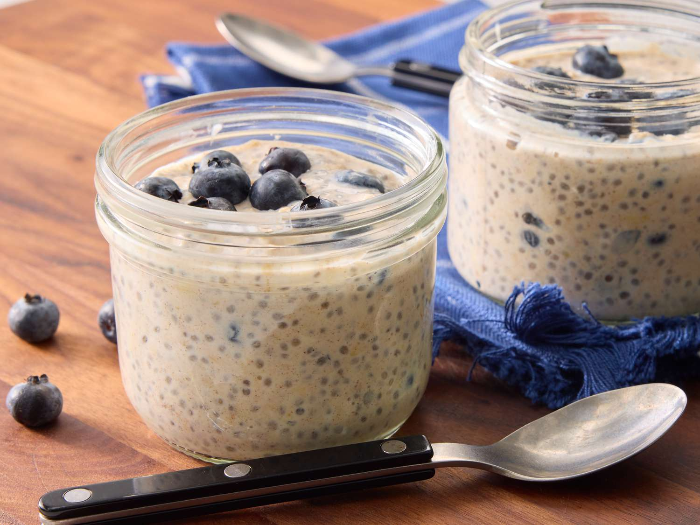

Overnight Oats Recipe
Overnight Oats

Creamy and Delicious Blueberry Overnight Oats
This quick and easy recipe for overnight oats is so simple and its an effective way to get a headstart on your breakfast the night before. Just prep, set in the fridge, and you will be waking up to the creamiest oatmeal ever
Ingredients
- Raw Old Fashioned Oats
- Almond Milk
- Honey
- Chia Seeds
- Nonfat Yogurt
- Cinnamon Powder
- Vanilla Extract
- Fresh Blueberrys
- Sea Salt
- Mason Jar with Seal
Steps:
- Take your clean empty mason jar and add 1/3rd cup of raw oats
- Add 1 cup of almond milk
- Add your cinnamon, honey, chia seeds, vanilla extract, and a pinch of sea salt
- Mix in some nonfat yogurt
- Once you have all the ingredients mixed into the mason jar. Seal the jar and give it a vigorous shake in order to oncorporate all the ingredients
- Leave in the fridge to set overnight
- Open the mason jar, you will notice the oats ahve absorbed all the milf and have become saturated and should not be raw anymore. Go ahead and top with some fresh blueberrys and enjoy
Home